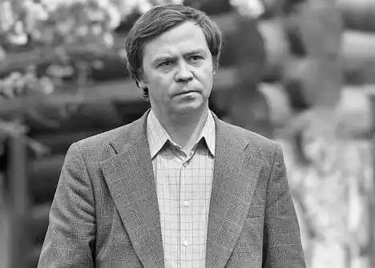

Распутін Валентин Григорович (1937) біографія
Валентин Григорович Распутін ввійшов у наше літературу відразу, майже без розбігу як і істинний майстер слова. Важко уявити російську літературу сьогодні без повістей і оповідань нашому земляку. Його твори здобули заслужену популярність у нашій країні за кордоном.
Біографія письменника проста, але духовний досвід багатий, неповторний, невичерпний і допомагає зрозуміти, звідки з'явився такий могутній талант, який засяяв найяскравішими гранями. Шлях Валентина Распутіна у літературу визначився найкраще: в стислі терміни молодий письменник став поруч із великими майстрами прози. "Дитинство моє довелося війну і голодні повоєнні роки, — згадує письменник. — Він був нелегким, але це, який у мене тепер розумію, було щасливим. Щойно навчившись ходити, ми шкутильгали до річки і закидали у ній вудки; ще окріпнувши, тяглися в тайгу, починалося відразу за селом, збирали ягоди і гриби, з малих років сідали в човен самостійно бралися за вёсла..." Батьківщина письменника, Аталанка, — невеличке село заціпеніло на березі прославленої річки Ангари. Нині вона перенесена до берега Братського моря, и перетворилася на робочий селище. Народився 15 березня 1937 в селі Усть-Уда Східно-Сибірської (нині Іркутська область) області в селянській родині. Мати — Ніна Іванівна Распутіна, батько — Григорій Микитович Распутін. З двох років жив у селі Аталанка Усть-Удінський району. Закінчивши місцеву початкову школу, змушений був один виїхати за п'ятдесят кілометрів від будинку, де знаходилася середня школа, про цей період згодом буде створений знаменитий розповідь "Уроки французького", 1973. Після школи вступив на історико-філологічний факультет Іркутського державного університету. У студентські роки став позаштатним кореспондентом молодіжної газети. Один з його нарисів звернув на себе увагу редактора. Пізніше цей нарис під заголовком "Я забув запитати у Лешко" був опублікований в альманасі "Ангара" в 1961 році. У 1979 році увійшов до редакційної колегії книжкової серії "Літературні пам'ятники Сибіру" Східно-Сибірського книжкового видавництва. У 1980-х роках був членом редакційної колегії "Роман-газети". Жив і працював в Іркутську, Красноярську і в Москві. 9 липня 2006 року в результаті авіакатастрофи, що сталася в аеропорту Іркутська, загинула дочка письменникам, 35-річна Марія Распутіна, музикант-органіст. 1 травня 2012 року в віці 72 років померла дружина письменника — Світлана Іванівна Распутіна. Закончена навчання у Іркутськом університеті (1959), попереду робота кореспондентом в газетах "Радянська молодь" і "Красноярський комсомолець". Перша розповідь "Я забув запитати Олексійка..." опублікований 1961 року. На лісоповалі обрушена сосна випадково зачепила хлопця Лешку. Двоє друзів вирішили супроводжувати Лешку до лікарні — півсотні кілометрів пішки. Лешка помер на руках друзів. Трагедія. Потрясіння. У оповіданні присутній те, що стане потім невід'ємним переважають у всіх творах Распутіна: природа, чуйно реагуюча події у душі героя; пекучі роздуми про справедливість, пам'яті, долі. Талановито написані та інші ранні розповіді письменника: "Рудольфио", "Василь і Василиса", "Продається ведмежа шкура". "Я рано приохотився до читання, до книжок, — згадує Валентин Распутін, — в навчання показував старанність, й мене чотирьох класів сільської школи, як вважають, слід було вчити далі". Найпопулярніший з ранніх оповідань письменника "Уроки французького" автобіографічний. Одинадцятирічний хлопчик приїжджає навчання у райцентр, де є школа-восьмилетка. Він першим відірваний від моєї родини, від рідної села. Не дивні його нездоланна туга й потяг додому. Проте маленький герой розуміє, що у нього покладено надії як рідних, але й села: адже він, по одностайної думки односельців, "сама природа заклала покликаний бути ученим людиною". Ця думка земляків підтверджено і у новій школі, з нового колу спілкування. Але час був важке — повоєнний і напівголодне. Хлопчик починає на гроші, єдино лише тим, щоб матимуть можливість щодня купити баночку молока "від недокрів'я". І вчителька французької йде ризикований крок: таємно, себе вдома, зле жартує над учнем, просто з легко з'ясовного людського співчуття: "Хлопчик вкрай виснажений, а борг брати відмовляється". Пізніше у цій розповіді поставили кінофільм. Сам Распутін зазначає, що "письменником людини робить її дитинство, здатність у потрібний ранньому віці побачити їх і відчути усе те, що йому потім право розпочати перо. Освіта, книжки, життєвий досвід виховують і зміцнюють надалі ця Божа іскра, але народитися йому рухається у дитинстві". Про пізніших розповідях Распутіна найкраще сказав письменник Алесь Адамович: "Нове, дійсно нове тут — підкреслена почуття реальності подій. Людина перетворюється на них — істота, сам себе удивляющее глибинами, обширами, що у ньому приховані. І раптом розкривається істота светоносное". У оповіданні "Вік живи — століття люби" п'ятнадцятирічний Саню із юнацькою категоричністю вирішує розраховувати на "самостійність". "Досить ходити за вказівкою, чинити відповідно до підказкою, вірити казці"... А далі усе відбувається саме як у казці. Батьки їдуть у подорож, відправивши сина до бабусі на Байкал. Бабуся отримує телеграму хворобу доньки Неоніли та їде няньчити онуків... А Саню знаходить жадану волю і можливість провести у життя своє тверде рішення. Саню вирушає над далекі країни й не так на зелені океанські острова, а на тихоходном поїзді так у своїх двох йде з Митяем і дядьком Володею в рідну прибайкальскую тайгу на 2 дні з ночівлею. І Саней так розкривається тайга у своїй величі і первозданності, що ці дві дня запам'ятаються йому протягом усього життя. У героя оповідання "Що передати вороні?" є дача на Байкалі, у дворі могутня модрина, де живе цілком звичайна, земна, добра й говірка ворона. Дочка вірила розповідям батька про вороні, вміє все побачити й чути. Але щоб отак вийшло: батько незаслужено скривдив доньку турботою й перевернулося в нього не ладитись, колом винен, місця собі не є знаходить. Їдучи із міста до батьків, запитав: "Що передати вороні?", шукаючи примирення. Що відповіла дівчинка, вибачила чи батькові образу, ви дізнаєтеся, прочитавши написав це оповідання. У збірники "Що передати вороні?" і "Вік живи — століття люби" ввійшли інші розповіді: "Люся", "Ледоход", "Лужайка". Усі вони наразі про природі й людях, які живуть на Байкалі. Наприкінці 1960-х років У. Распутін було ухвалено спілку СРСР. Тоді ж одна одною з'являються повісті молодого прозаїка "Гроші для Марії" і "Останній термін", у яких ясно визначилися предмет зображення — сибірська село — і напрям таланту — глибоке насичення народну життя, на повагу до традиції, увагу до моральним проблемам. Бабуся і дідусь письменника "були людьми сильних характерів..." Це про неї розповідь "Василь і Василиса". "З неї започаткував, — згадує Валентин Григорович, — я бабусю писав постійно, з неї зліплені стара Ганна в "Останньому терміні" і стара Дарія в "Прощании з Матерой". Доля моїх односельців та моєї села майже у всіх книжках, та його, цих доль, вистачило б поки що не багато". У повісті "Живи і помни"(1974г.) Валентин Распутін намагається зрозуміти, чому нормальний, начебто, сільський мужик Андрій Гуськов вироджується на живу істоту, позбавлене людського вигляду. Дезертирство із фронту, зрадництво, боягузливість Андрія призводять до трагічної загибелі його дружину Настену. Ця повість принесла у літературу нове про війну та по-новому освітила характер російської жінки. За повісті "Живи і пам'ятай" і "Пожежа" Валентин Григорович був двічі удостоєний звання лауреата Державної премії СРСР. Літературна критика називає У. Распутіна "могутнім явищем сучасної вітчизняної і світової літератури", книжки його весь частіше видаються країни й там, щодо окремих творам ставляться спектаклі, знімаються фільми. Він удостоюється найвищих нагород і премій. Валентин Распутін — дуже талановитий і діяльна людина. Звати його часто можна зустріти зі сторінок центральних газет, під час передач радіо та телебачення. Одне з найважливіших проблем, із якими часто виступає У. Распутін, — проблема збереження Росії, Байкалу, заощадження для нащадків його вроди й природних багатств. 15 березня 2007 року письменнику Валентину Распутіну виповнилося 70 років. 14 березня 2015 року було госпіталізовано, знаходився в комі. 14 березня 2015 року, за 4 години до свого 78-річчя, Валентин Григорович Распутін помер уві сні, а по іркутському часу це було 15 березня, тому земляки вважають, що він помер в свій день народження. 16 березня 2015 року в Іркутській області був оголошений траур. 19 березня 2015 року письменника було поховано в Знам'янському монастирі Іркутська.